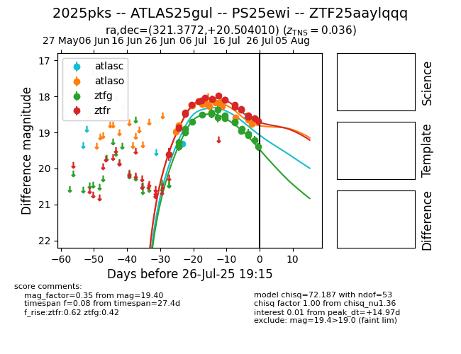

Target 2025pks at 2025-07-26 19:15, see:
FINK: fink-portal.org/2025pks
Lasair: lasair-ztf.lsst.ac.uk/objects/2025pks
ALeRCE: alerce.online/object/2025pks
TNS: wis-tns.org/object/2025pks
YSE: ziggy.ucolick.org/yse/transient_detail/2025pks
alt names
ZTF25aaylqqq (ztf,fink)
2025pks (tns,yse)
ATLAS25gul (atlas)
PS25ewi (panstarrs)
coordinates:
equatorial (ra, dec) = (321.3772,+20.50401)
galactic (l, b) = (71.1812,-21.06425)
photometry
last atlasc=19.32, atlaso=18.77, ztfg=19.40, ztfr=18.68
1 atlasc, 14 atlaso, 20 ztfg, 22 ztfr detections
